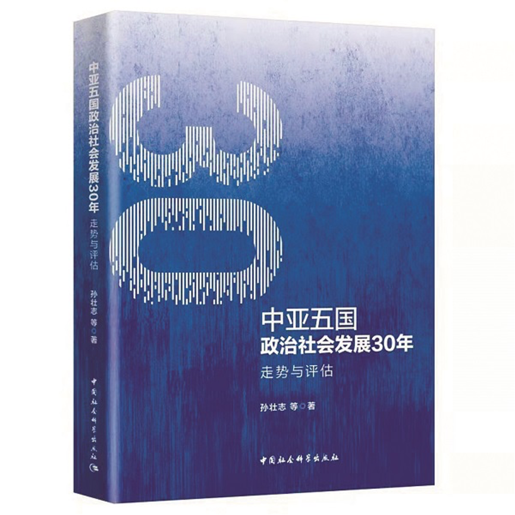

收录于合集

作品简介
【作者】 王思羽，上海外国语大学上海全球治理与区域国别研究院
【来源】 《中国社会科学报》2021年1月27日总第2099期
【编辑】 陈育涵

18世纪后期，从俄罗斯帝国开始在咸海北端的锡尔河西段沿河筑起堡垒，直至1991年苏维埃国旗从克里姆林宫降下，中亚这片古老丝路回廊之地一直遵循着莫斯科设定的理想道路前进。冷战结束后，化石能源工业、现代城市和大型国营农场，成为这一时代中亚地区永久的残影。中亚地区在俄罗斯民族国家系统性的征服与统治下，跨越了数个世纪，最终以五个独立民族国家的全新身份重生，并登上国际舞台。从那时起，中亚各国的民族精英应当引领国家和社会朝着哪个方向前行，又如何从旧秩序的废墟上，在新的世界环境中探索属于自己的发展路径，既是国际社会和学界举目谛视的问题，也是世界历史演进篇章中的生动一页。
稳定和发展是学术研究基调
挪威社会人类学家埃里卡·法特兰曾于2016年专门推出著作《苏维埃斯坦》，以人类社会学的独特角度，基于大量的实地访谈和田野调查记录，探访当代中亚各国的历史、文化和社会状况。2021年，中亚五国将迎来纪念国家独立30年。纽约州立大学历史学者尤里·马里科夫2020年9月发布新作《现代中亚：主要读本》，全面回顾了中亚文明在俄罗斯统治时期（1731—1991）和后苏联时代（1991年至今）基本的政治、社会和经济发展，以其对中亚社会生态系统结构变化的详尽回顾与比较分析，成为中亚研究中颇具价值的文献。
纵览全球，东西方安全困境并未随着柏林墙倒塌和苏东剧变而休止，席卷欧美的民粹主义浪潮及偶发的全球性新冠肺炎流疫危机，使得国际安全格局和经贸体系濒临重构边缘。值此背景下，由孙壮志等著、2020年11月出版的《中亚五国政治社会发展30年：走势与评估》一书，发出中国学界研究中亚国家转型时期政治社会发展的新声，为反思全球秩序，展望新时代中国改革与全面建设社会主义现代化国家新征程，提供了有益的参悟与启示。
学界对于后苏联国家转型变革的宏观学术解释时代远未结束，对于衡量标准、科学范式、价值逻辑、诠释规则的争议尚存。该书以“稳定和发展”作为重要标准，为中亚各国的荣枯兴衰及同源不同流的后苏联社会，附上了独到的解析。相较于斯蒂芬·汉森、瓦莱丽·邦斯、查尔斯·金对后苏联国家转型道路的单一构想，抑或玛莎·布里尔·奥尔科特在《中亚的第二次机会》中基于美国价值观外交滤镜下的失望与乐观，该书作者试图引导读者尊重和理解不同国家的国情和制度多元化现实，倾向于探讨国家社会与经济发展的根本性问题，将关注焦点从意识形态之上的道路模式之争，转移到不同转型路径选择所换取的代价之上。
历史论据和评判逻辑不应分裂
作者用横向铺开的中亚各国历史大事记，将各国发展进程尽可能地描述为一场竞速赛，而非淘汰赛。正因如此，也直接证明了历史论据和评判逻辑不应分裂，预设价值同现实结果必须统一。
冷战结束后，全球化造成的劳动力迁徙、就业方式多样化以及苏东国家发展水平差异等因素，致使转型国家在路径选择上面临诸多不确定性。中亚五国无法仿效欧洲转型经济体基于产业空间、经济功能以及人口的政策经验。教条式借鉴的后果，往往是失序、衰退和失业的连锁反应，反而加剧了这些国家劳动力的外逃与迁徙。在最初十年间，多数中亚国家都经历了由于片面理解转型问题而带来的阵痛与挫败，比如严重的社会衰退。这也迫使有的国家为确保国家调控功能不再进一步受损，阻止了一些对国民经济体系发展不利的扰动因素，并重新调整改革方向。
转型国家的发展与道路选择，是基于改变经济增长方式和政治实践方式的过渡模式，对任何国家都具有不同的规范含义，其进程、成效和途径的复杂，远未脱离我们观察和研究的陌生领域。尽管西方价值观的倡导者多年来一直尝试建立转型国家目标和方向的全球统一标准，但当强大的转型抱负因过度概化的发展导向而陷入误区，那么，国家治理规则和标准是否还应继续遵循统一的价值原则？如果需要，是接近那些成功案例的倡导模式，还是基于本国国情对之扬弃以建立自己的标准？该书在开篇和最后均向学界提出了这一问题。与直接回答相比，它更倾向于明示中亚国家间的对比，在对每一个中亚国家的发展回顾中，阐释了政治制度嬗变、社会秩序、失业和贫困间的关系，这对于读者更深刻地思考和探寻该问题的答案至关重要。
为迎接新的30年做好准备
该书向读者清晰展现了中国学界对于这片西侧广袤邻邦之地的考量：不同于诸多文学作品中神秘、丰饶的古丝路印象，更多地是在后冷战时代的现实中，正视那些始终暗流涌动的威胁。除了愈发严重的生态灾难，书中还详细梳理了这一地区难以根除的国际毒品交易以及恐怖主义威胁等。从大量历史回顾中可以看到，冷战之后的中亚丝路古道早已在全球化体系中黯然失色，当亚洲或将迎来“新世界中心”的经济桂冠时，中亚却早已不再是“亚洲中心”，而是在转型的痛苦挣扎中，不知不觉地沦为全球经贸网络中的无名之地与边陲隅夷。
近十年来，中国将经贸重心从东部沿海地区向西移动，使得中亚各国在国际贸易走廊中再度受益。2020年11月，上海合作组织成员国元首理事会发布了关于数字经济领域合作的声明，将尖端数字技术、人工智能、机器人、物联网等领域列入新合作框架。这似乎也意味着，中亚五国虽错过了上一个30年，却在为迎接新的30年做好准备。在未来新的国际格局与市场环境中，中亚五国该如何消除和解决历史遗留的难题，如何调整各自定位，让我们拭目以待。
（作者单位：上海外国语大学上海全球治理与区域国别研究院）
责任编辑：陈静
文章观点不代表本平台观点，本平台评译分享的文章均出于专业学习之用, 不以任何盈利为目的，内容主要呈现对原文的介绍，原文内容请通过各高校购买的数据库自行下载。